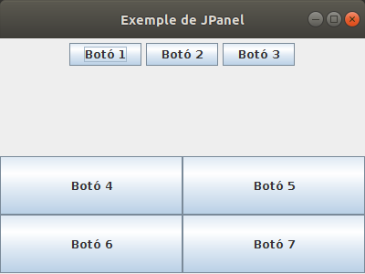

Accés a Dades
4.1.- JPanel
El més habitual serà combinar més d'un layout per a poder dividir la pantalla en més parts. Aleshores utilitzarem el JPanel, que senzillament és un component capaç de contenir altres components. En el moment de crear-lo li diem en quin Layout es basarà. Posteriorment són els JPanel els que afegim al JFrame, i els components els afegim als JPanel.
En el següent exemple el JFrame el creem un GridLayout de dos files i una columna. En la primera casella (primera fila) posem un JPanel basat en un FlowLayout amb 3 botons. En la segona fila posem un altre JPanel basat en quest cas en un GridLayout de 2x2.
class Finestra : JFrame() {
init {
defaultCloseOperation = JFrame.EXIT_ON_CLOSE
setTitle("Exemple de JPanel")
setSize(400, 300)
setLayout(GridLayout(2,1))
val panell1 = JPanel(FlowLayout())
val panell2 = JPanel(GridLayout(2,2))
val boto1 = JButton("Botó 1")
val boto2 = JButton("Botó 2")
val boto3 = JButton("Botó 3")
val boto4 = JButton("Botó 4")
val boto5 = JButton("Botó 5")
val boto6 = JButton("Botó 6")
val boto7 = JButton("Botó 7")
add(panell1)
add(panell2)
panell1.add(boto1)
panell1.add(boto2)
panell1.add(boto3)
panell2.add(boto4)
panell2.add(boto5)
panell2.add(boto6)
panell2.add(boto7)
}
}El resultat és el següent:

Llicenciat sota la Llicència Creative Commons Reconeixement NoComercial SenseObraDerivada 2.5